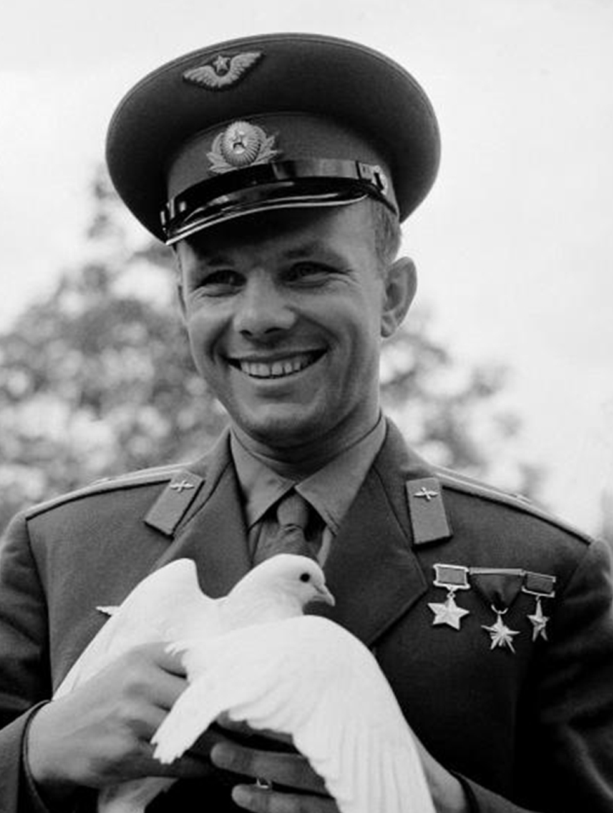
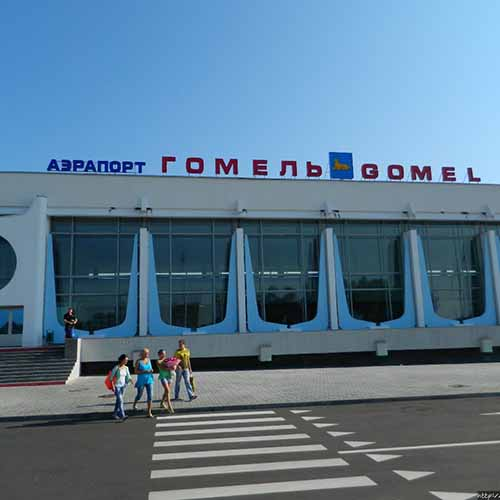
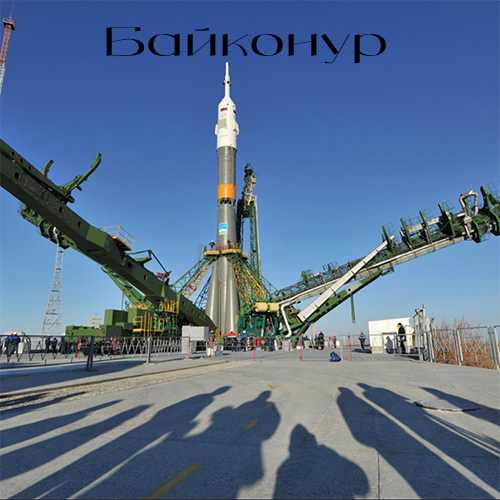

Юрий Алексеевич Гагарин
🛰️Впервые в мире человек вышел на орбиту планеты Земля🚀
Откуда произведен первый запуск ракеты в космос?
На корабле «Восток» 12 апреля 1961 года лётчик-космонавт СССР Юрий Алексеевич Гагарин совершил первый в мире пилотируемый полёт в космическое пространство.
Старт корабля состоялся с советского космодрома «Байконур» в 9 часов 7 минут по московскому времени (06:07:00 UTC).


